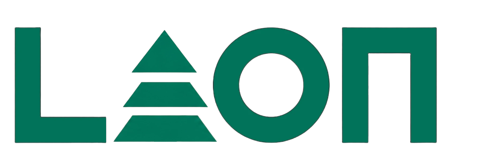
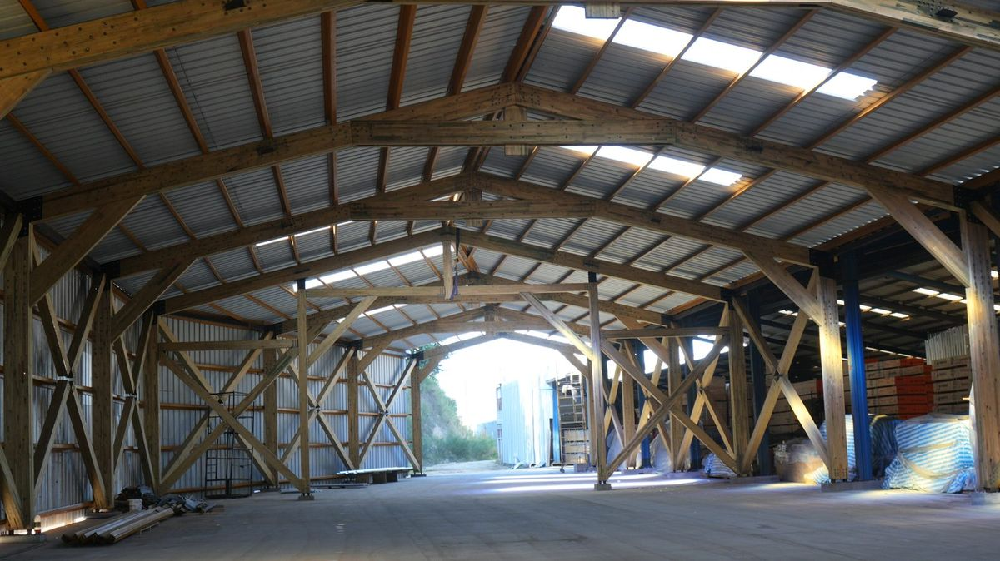
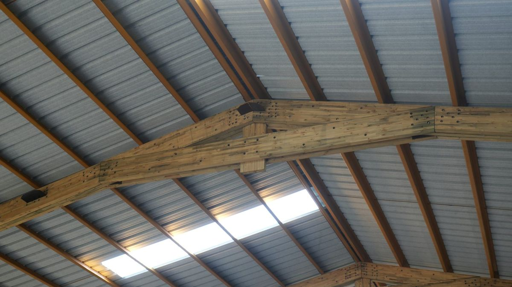
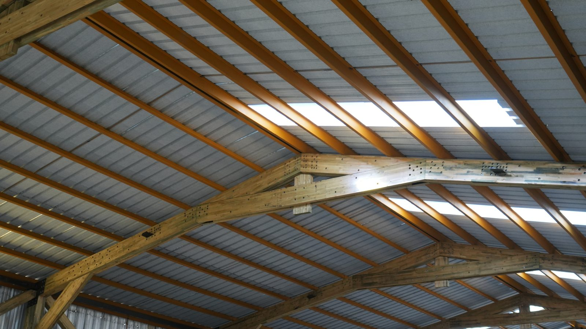

fotos-web/ como marcador visible: aún no hay fotografía de obra ejecutada, y por eso no llevan nombre de proyecto inventado. Genera el JSON real en elementor/viviendas.json.
Construcción en madera
Una vivienda en madera es sinónimo de bienestar y confort. Las superficies de madera y sus propiedades naturales para retener el calor y regular la humedad crean un clima interior equilibrado, convirtiendo cada espacio en un ambiente cálido y agradable para vivir.

Escuadrías, conectores estructurales y el detalle completo de los componentes que fabricamos en planta para tu proyecto de vivienda.
La construcción de viviendas unifamiliares en madera con sistema Timber Frame es hoy una de las alternativas más eficientes y competitivas del mercado chileno. En Forestal León fabricamos todos los componentes estructurales en planta, con vigas laminadas, pilares y conectores estructurales metálicos listos para montar en obra, tanto para construcciones nuevas como para ampliaciones de viviendas existentes.
La estructura se complementa con panelería liviana no estructural, ya sea tabiquería de madera, perfilería metálica, paneles aislantes o vidrio, permitiendo adaptar cada vivienda a los requerimientos funcionales, climáticos y estéticos del proyecto. El resultado es una estructura precisa, durable y adaptable a cualquier estilo arquitectónico, ya sea tradicional o moderno, con el toque personal que cada proyecto merece.
Lo que fabricamos en planta y lo que se ejecuta en obra queda definido desde el primer contacto: Forestal León entrega el kit estructural —vigas laminadas, pilares y conectores metálicos— listo para montar; el montaje, la panelería de cierre y las terminaciones corren por cuenta del equipo de construcción del proyecto.

Próximamente — obras de vivienda ejecutadas con este sistema.
Referencia de obra — foto y datos pendientes
Referencia de obra — foto y datos pendientes

Referencia de obra — foto y datos pendientes